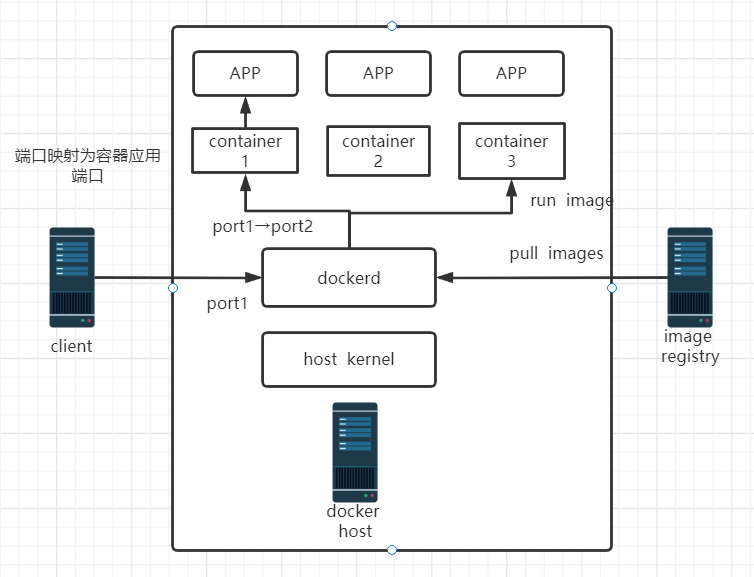
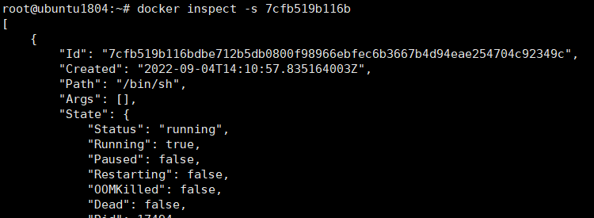
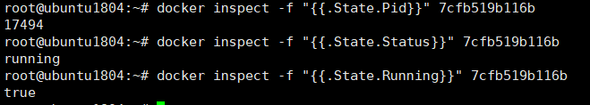

docker容器基础
本文主要概括了容器的基础知识和基础命令。
docker简介
docker是基于linux内核lXC技术发展的虚拟化技术。docker采用客户端和服务端架构，使用远程API管理和创建docker容器，运行时不需要类似虚拟机的额外资源开销，可以理解为更方便部署、更轻量级的虚拟机，因此被称为应用容器（Application Container）
docker三大理念：构建（build）、运输（ship）、运行（run）。使用过程可概括为：构建容器镜像，上传镜像仓库，docker主机从仓库pull镜像并运行。
docker依赖的关键技术：user namespace实现容器的用户和用户组隔离互不干扰、linux control groups（CGroup）实现每个容器的资源限制和分配优先级设置。
编排工具：大规模容器统一管理、动态伸缩、故障自愈需要依赖容器编排工具。使用最多的就是kubernetes（k8s）
工作原理
docker主机可使用物理机或虚拟机，运行docker服务进程和容器。开启docker后可看到dockerd和containerd进程，containerd是创建容器的进程，运行中的容器是它的子进程（containerd-shim），dockerd可理解为管理进程，不但可管理containerd，还负责处理client访问和容器间通信（子进程docker-proxy）。

容器规范
不同容器公司开发的容器技术遵守OCI定义的规范，保证容器的可移植性和相互操作性。
runtime spec（runc）：runtime是真正运行容器的地方，为了运行不同容器runtime需要和操作系统内核紧密合作。定义了容器ID、容器进程PID、容器创建、生命周期规范，以json保存在/run/docker/runtime-runc/moby/容器ID/state.json文件中
**image format spec:**定义了容器镜像的文件系统分层结构、manifest、config、index等文件的规范。其中涉及镜像不同layer的管理、容器运行配置、索引等。
docker安装
可在以下网站获得安装包
rpm包
https://download.docker.com/linux/centos/
二进制包
https://mirrors.aliyun.com/docker-ce/linux/static/stable/x86_64/
ubuntu
仓库配置过程可以参考下文
https://zhuanlan.zhihu.com/p/143156163
查看可安装版本
1 | |
docker镜像基础命令
以下命令具体参数用法可-h查看帮助
搜索镜像（官方仓库）
docker search 镜像名：版本（默认为latest）
下载镜像
docker pull 镜像名
查看本地镜像
docker images
镜像导出
docker save 镜像名 -o /path/image.tar.gz
docker save 镜像名 > /path/image.tar.gz
镜像导入
docker load < /path/image.tar.gz
删除镜像
docker rmi 镜像名
docker容器基础命令
以下命令具体参数用法可-h查看帮助
启动容器
docker run [OPTIONS] IMAGE [COMMAND] [ARG…]
-t, –tty Allocate a pseudo-TTY
-i, –interactive Keep STDIN open even if not attached
–rm Automatically remove the container when it exits
进入运行中的容器
docker exec -it 容器ID bash
退出容器后依然运行
传递运行命令
docker run -d 镜像名 命令
查看运行容器
docker ps [-a] -a可显示已关闭容器
删除容器
docker rm 容器ID/容器名 -f强制删除运行中容器
容器与宿主机间拷贝文件
docker cp 容器ID:/path/file /path/file 反过来同理
指定端口映射（可指定多端口）
docker run -p[本地IP：]本地端口：容器端口 –name 容器名 镜像名
查看容器端口映射
docker port 容器ID/容器名
查看容器状态
docker inspect [OPTIONS] NAME|ID [NAME|ID…]
-f, –format string Format the output using the given Go template
-s, –size Display total file sizes if the type is container
–type string Return JSON for specified type


本博客所有文章除特别声明外，均采用 CC BY-SA 4.0 协议 ，转载请注明出处！